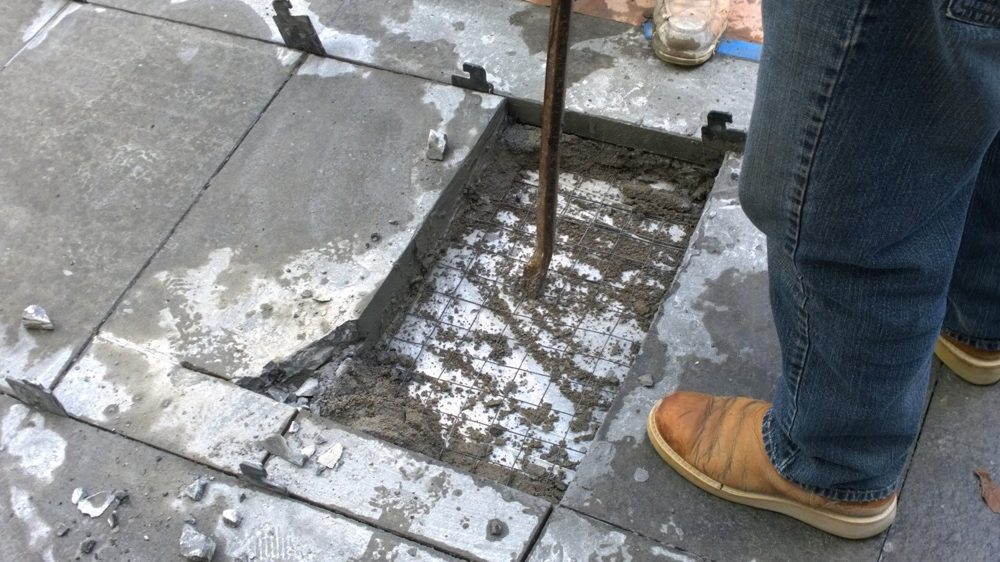
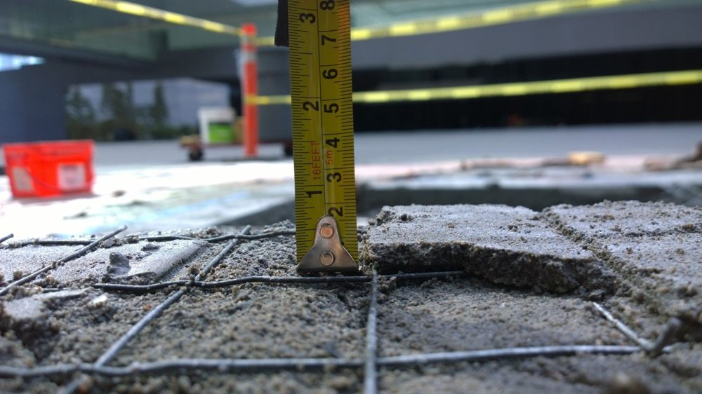
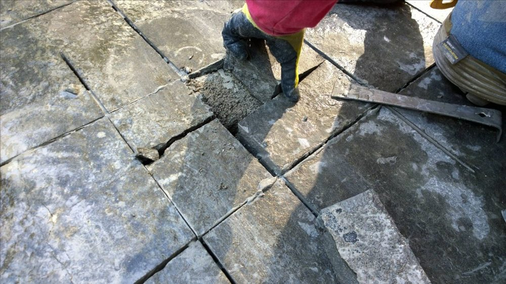

Serious problems require an examination of the flooring system to determine the cause of various issues — cracked stone, cracked grout, movement, hollowness. In this situation, extensive and serious repairs were required to minimize damage to the stone and installation.
To properly assess the causes of the issues and develop corrective solutions, tests and studies were conducted over a two-month period: thermal expansion examination, flooring system analysis, issue mapping across the 55,000 sq. ft. installation, and repair specifications and procedures.
Testing included destructive testing along with coefficient of thermal expansion and compression strength testing.
The installation is roughly 55,000 sq. ft. of "Inca Grey" flamed basalt slab — nominally 5' x 30", 3 cm on the interior and 5 cm on the exterior — set over a dry-pack mortar bed, reinforcing mesh, and cleavage membrane. The first question was whether the stone itself was at fault. Independent laboratory testing across two separate years found the basalt exceeds ASTM C615 requirements for granite, with water absorption averaging 0.27% against a 0.40% maximum. The stone was suitable for the application.
Thermal expansion testing told a different story. The slabs expand positively and nearly linearly with every rise in temperature, and the extent of that expansion grows with the size of the area. The stone stays structurally sound as it moves — but the grout, the least elastic material in the assembly, does not. A dark stone set beside a large exterior glass wall absorbs and retains heat; surface-to-air temperature differences exceeded 20°F even in November, and would be considerably wider in summer.
Mapping the floor put numbers on the result: approximately 80% of the grout is cracked, roughly 40% of the interior and exterior floor sounds hollow, and three slabs in the west corridor move noticeably underfoot. Earlier grout repairs performed after the installation had already failed, because the underlying movement was never addressed. Compressive strength testing of the dry-pack mortar averaged 1,875 psi — below what the driveway and courtyard need to carry limousines and car transport trailers — and much of the cracked grout sits precisely at the intersection of four slabs, the weakest point under load.
Two further factors compounded the problem rather than caused it. Heavy construction traffic was permitted on the floor before the dry-pack had cured, which affected both the appearance of the stone and the performance of the assembly, and made the widespread lippage across these large, heavy slabs effectively irreparable. Separately, irrigation overspray and landscaping in direct contact with the stone drove moisture into the cracked grout at the driveway and south entrance, producing the efflorescence visible along those transitions.
The conclusion was that the primary issue is the absence of expansion joints, leaving the flooring system unable to absorb ordinary movement plus thermal and moisture-driven expansion. The recommended correction is to saw-cut through the assembly into the concrete slab to create expansion joints around 10' x 7.5' flooring units, fill those perimeters with elastomeric sealant per ANSI 108.1, and re-grout the interiors — proven first on half the driveway, the worst-affected area, with a 45-day observation period before extending the repair to the rest of the property.


